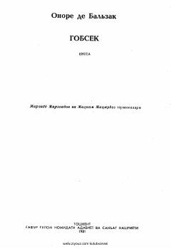

GBoylik va insoniy qadriyatlar to'qnashuvi haqidagi klassik asar.
Ushbu asar mashhur fransuz yozuvchisi Onore de Balzak qalamiga mansub bo'lib, unda boylik va insoniy munosabatlar o'rtasidagi murakkab ziddiyatlar tasvirlanadi. Asar bosh qahramoni Gobsek obrazi orqali pulning inson xarakteriga ta'siri va jamiyatdagi o'rni chuqur tahlil qilinadi.